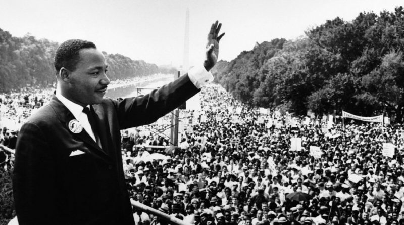

Grandes nomes para o Movimento Negro

Saiba mais aqui
Martin Luther King Jr. (nascido Michael King Jr.; Atlanta, 15 de janeiro de
1929 — Memphis, 4 de abril de 1968) foi um pastor batista e ativista político
estadunidense que se tornou a figura mais proeminente e líder do movimento dos
direitos civis nos Estados Unidos de 1955 até seu assassinato em 1968. King é
amplamente conhecido pela luta dos direitos políticos através da não-violência
e desobediência civil, inspirado por suas crenças cristãs e o ativismo não-violento
de Mahatma Gandhi.King liderou em 1955 o boicote aos ônibus de Montgomery e posteriormente
se tornou o primeiro presidente da Conferência da Liderança Cristã do Sul. King ajudou na
organização da Marcha sobre Washington onde ele ditou seu famoso discurso
"Eu Tenho um Sonho". (Fonte:Wikipédia)
Saiba mais aqui
Marielle Francisco da Silva, conhecida como Marielle Franco
(Rio de Janeiro, 27 de julho de 1979 – Rio de Janeiro, 14 de março de 2018),
foi uma socióloga e política brasileira. Filiada ao Partido Socialismo e
Liberdade (PSOL), elegeu-se vereadora do Rio de Janeiro para a Legislatura
2017-2020, durante a eleição municipal de 2016, com a quinta maior votação.
Marielle defendia o feminismo, os direitos humanos, e criticava a intervenção federal
no Rio de Janeiro e a Polícia Militar, tendo denunciado vários casos de abuso de
autoridade por parte de policiais contra moradores de comunidades carentes.
Em 14 de março de 2018, foi assassinada a tiros junto de seu motorista, Anderson
Pedro Mathias Gomes, no Estácio, Região Central do Rio de Janeiro. (Fonte:Wikipédia)
Saiba mais aqui
Abdias do Nascimento (Franca, 14 de março de 1914 — Rio de Janeiro, 23 de maio de 2011)
foi ator, poeta, escritor, dramaturgo, artista plástico, professor universitário, político
e ativista dos direitos civis e humanos das populações negras brasileiro.Considerado um dos
maiores expoentes da cultura negra e dos direitos humanos no Brasil e no mundo, foi
oficialmente indicado ao Prêmio Nobel da Paz de 2010. Fundou entidades pioneiras
como o Teatro Experimental do Negro (TEN), o Museu da Arte Negra (MAN) e o Instituto
de Pesquisas e Estudos Afro-Brasileiros (IPEAFRO). Foi um idealizador do Memorial Zumbi
e do Movimento Negro Unificado (MNU) e atuou em movimentos nacionais e internacionais
como a Frente Negra Brasileira, a Negritude e o Pan-Africanismo. (Fonte:Wikipédia)
 Saiba mais aqui
Saiba mais aqui
Lélia Gonzalez (Belo Horizonte, 1 de fevereiro de 1935 — Rio de Janeiro, 10 de julho de 1994)
foi uma intelectual, autora, política, professora, filósofa e antropóloga brasileira.
Foi pioneira nos estudos sobre Cultura Negra no Brasil e co-fundadora do do Instituto
de Pesquisas das Culturas Negras do Rio de Janeiro (IPCN-RJ), do Movimento Negro Unificado
(MNU) e do Olodum.Graduou-se em História e Filosofia pela Universidade do Estado do Guanabara,
atual Universidade do Estado do Rio de Janeiro (UERJ), e trabalhou como professora da rede pública de
ensino. Fez o mestrado em comunicação social. No doutorado se especializou em antropologia
política dedicando sua pesquisa em gênero e etnia. (Fonte:Wikipédia)
©Copyright Midian Brandão - 2021